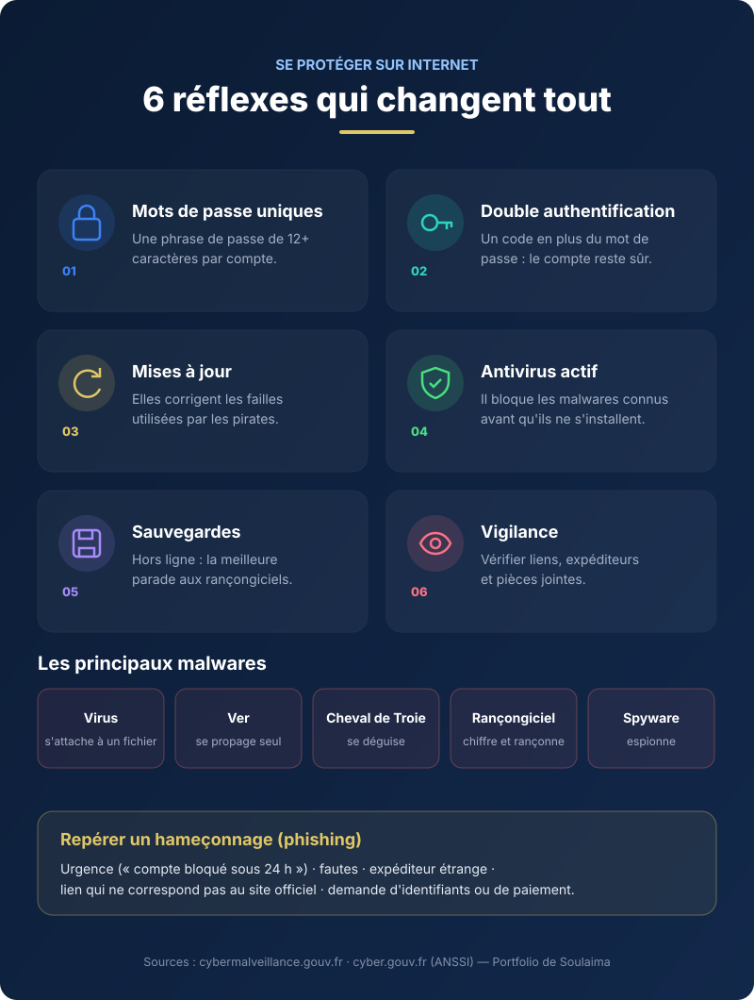

Podcast
Le podcast n'a pas pu être chargé.
Épisode à deux voix : Denise présente chaque partie, Henri explique le contenu du résumé.
Digital Skills · Chapitre 1
Comprendre les menaces numériques (logiciels malveillants, hameçonnage, vol de comptes) et adopter les bons réflexes au quotidien.
Signe d'alerte typique d'un hameçonnage : urgence (« votre compte sera fermé dans 24 h »), fautes, adresse d'expéditeur bizarre, lien qui ne correspond pas au site officiel.
Coche ce que tu fais déjà. Ton score est enregistré dans ton navigateur.

Outils conseillés : Perplexity (sources), Canva (infographie), Gamma (présentation).
Script de ma future vidéo : « Un clic suffit. Dans cette vidéo, je présente les 5 grandes familles de malwares, comment reconnaître un hameçonnage et les 6 réflexes qui protègent vraiment : mots de passe uniques, 2FA, mises à jour, antivirus, sauvegardes et vigilance. »
Le podcast n'a pas pu être chargé.
Épisode à deux voix : Denise présente chaque partie, Henri explique le contenu du résumé.
Lecture complète du résumé du cours, idéale pour réviser en écoutant.
Le vocal n'a pas pu être chargé. Vous pouvez écouter la voix du navigateur :
Partagez cette fiche de révision avec la classe.